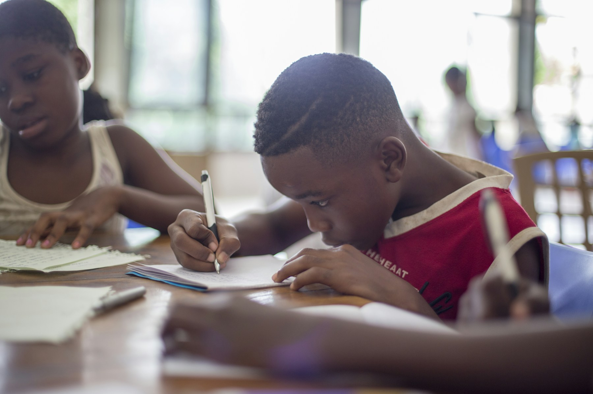

Science & Research
Eksperimen, metode ilmiah, dan komunikasi hasil riset.

SMA Cakrawala Nusa · Bandung
Membangun generasi berkarakter, berprestasi, dan siap menghadapi masa depan melalui pendidikan yang bermakna.
Cakrawala Nusa dalam angka

“Sekolah bukan sekadar tempat memperoleh jawaban, tetapi ruang untuk belajar mengajukan pertanyaan yang berarti.”
Kami mendampingi setiap siswa untuk mengenali potensinya, mengolah pengetahuan dengan jernih, dan menggunakan kemampuannya secara bertanggung jawab.
Dr. Maya KartikaKepala Sekolah, periode 2022–sekarang
Baca profil sekolahEksperimen, metode ilmiah, dan komunikasi hasil riset.
Bahasa, debat, dan pemahaman lintas budaya.
Komputasi, desain produk, dan etika teknologi.

Penerimaan siswa baru 2027/2028